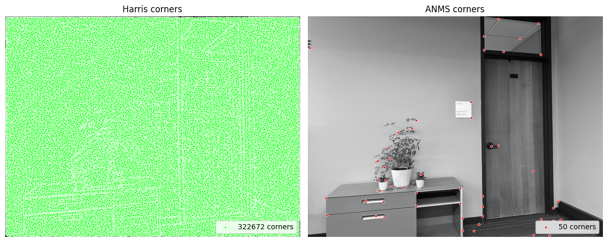
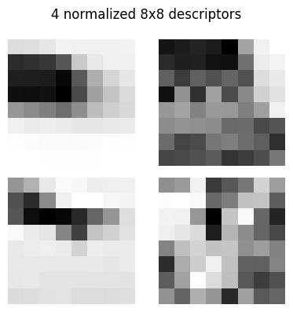
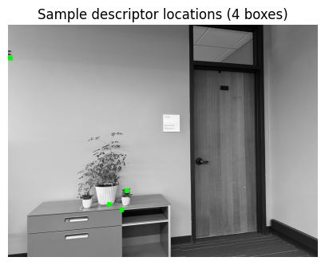
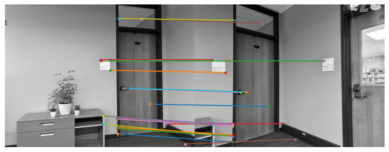
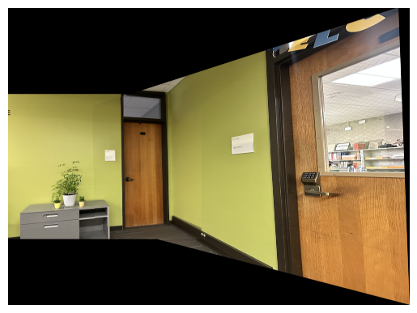
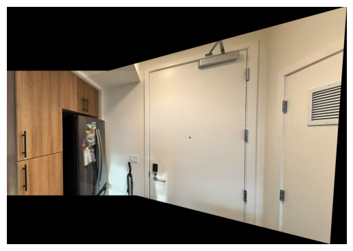
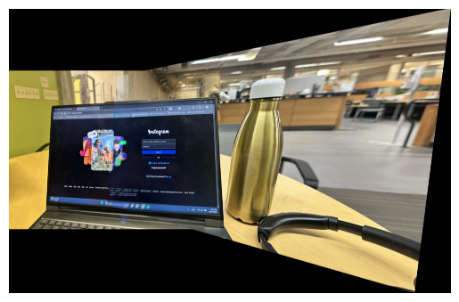

door_1.jpg

door_2.jpg
I shot overlapping photos, mainly indoors, computed homographies from point correspondences, implemented inverse warping with nearest-neighbor and bilinear interpolation, rectified planar regions, and blended registered views into panoramas.
I rotated the camera about (approximately) a fixed center of projection to keep parallax small
and captured ~50–60% overlap. Below are three sets I use throughout
(all images are in images/).


From each correspondence we get two linear constraints that stack into
A h = b, where h holds the 8 unknown homography parameters
(H[2,2]=1).
For each (x, y) → (x′, y′):
[-x, -y, -1, 0, 0, 0, x·x′, y·x′] · h = -x′
[ 0, 0, 0, -x, -y, -1, x·y′, y·y′] · h = -y′
Stacking all matches yields A ∈ ℝ^{2n×8} and b ∈ ℝ^{2n}. For n > 4 the
system is overdetermined; we estimate h in least squares:
h = argmin ||A h − b||₂ = (AᵀA)⁻¹Aᵀb
Finally, reshape h into H and set the scale so H[2,2]=1:
H = [[h11 h12 h13]
[h21 h22 h23]
[h31 h32 1]]


door:
A shape: (12, 8)
b shape: (12,)
Recovered H:
[[ 2.14345224e+00 -1.25890840e-01 -3.60926874e+03]
[ 4.59048265e-01 1.63958309e+00 -1.05987587e+03]
[ 2.88152784e-04 -5.46288636e-05 1.00000000e+00]]
fridge:
A shape: (12, 8)
b shape: (12,)
Recovered H:
[[ 2.49938918e+00 2.10353365e-02 -1.84772222e+03]
[ 5.83305354e-01 2.04216792e+00 -6.39509053e+02]
[ 8.72167306e-04 4.90642950e-06 1.00000000e+00]]
laptop:
A shape: (12, 8)
b shape: (12,)
Recovered H:
[[ 2.34799055e+00 1.29850866e-01 -4.77387811e+03]
[ 3.91098139e-01 1.94882150e+00 -9.58345438e+02]
[ 3.19640243e-04 -1.56615216e-05 1.00000000e+00]](Each case uses N=6 correspondences ⇒ 2N=12 equations; H normalized so H[2,2]=1.)
With the homography H, I warp each image into a target frame via inverse mapping: for each destination pixel q=[x′,y′,1]^T I compute p ∝ H⁻¹q and sample the source using two from-scratch methods—warpImageNearestNeighbor(im, H) (fast, blocky) and warpImageBilinear(im, H) (smoother, subpixel-aware).


After warping into a common canvas, I blend overlaps by feathering each alpha mask (edge falloff) and computing a normalized weighted average. For tougher seams, I optionally apply a small two-level Laplacian blend.


Pixel picking was tedious (reflections/perspective on the laptop set). Off-by-one bugs in inverse warping and seam handling were easy to introduce. Lighting and small parallax also made blending harder.
For the first step of my automatic stitching pipeline, I focused on finding good, strong feature points in my images. I started by using the Harris Corner Detector to identify initial interest points. The Harris detector is great at finding corners by looking at changes in intensity in different directions, but I quickly noticed that it gave me dense clusters of points in highly textured areas. To get a better distribution of feature points across the entire image, I implemented Adaptive Non-Maximal Suppression (ANMS). With ANMS, for each corner that the Harris detector found, I calculated a "suppression radius." This is the smallest distance to another corner that has a significantly higher strength (I used a robustness factor of c=0.9). By selecting the points with the largest suppression radii, I was able to get a set of features that were nicely spread out across the image. I found that this step was crucial for getting reliable results later on.

Once I had my keypoints from ANMS, I needed a way to represent the image patch around each point so that I could find corresponding points in other images. For each keypoint, I extracted a 40x40 pixel window from the image. I chose a larger window to be more robust to small variations and blurring. I then downsampled this 40x40 patch to a more manageable 8x8 descriptor. To make my descriptors invariant to lighting changes, I normalized each one by subtracting the mean and dividing by the standard deviation. This process, known as bias/gain normalization, ensures that the descriptors are based on the structure of the patch rather than the brightness. As you can see from the example images, these descriptors capture the distinctive features of each point.


With descriptors extracted from both images, the next step was to find matching pairs. I implemented a feature matching algorithm based on the ratio test proposed by David Lowe. For every descriptor in the first image, I found its two nearest neighbors in the second image by calculating the Euclidean distance. A match was only accepted if the distance to the nearest neighbor was significantly smaller than the distance to the second-nearest neighbor. I used a threshold of 0.7 for this ratio after some trial and error. This technique is effective because it discards ambiguous matches where a point in one image is almost equidistant to two or more points in the other image. The putative matches I got from this process were a good starting point for finding the geometric relationship between the images.

My feature matching step produced many good correspondences, but also some incorrect matches, or "outliers," that could ruin the final alignment. To solve this, I used RANSAC to find a reliable homography. This algorithm works by repeatedly taking a small, random sample of four matches, calculating a potential homography from them, and then counting how many of the other matches (the "inliers") fit this transformation. After thousands of iterations, I took the homography that had the largest set of inliers and re-calculated a final, highly accurate transformation using only this "best" set of points. This process ensured that the final stitched image was not distorted by the initial bad matches.
RANSAC params used:
inlier thresh: 4 px
iterations: 10,000
min inliers: 70


